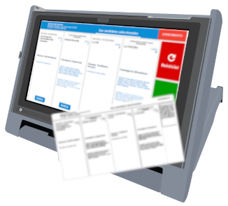
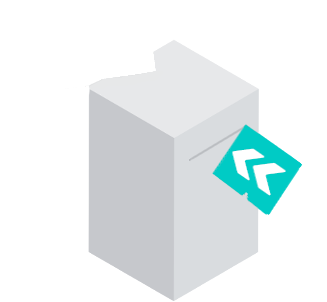

No oficial - EXPERIMENTO
Elecciones UNComa 2022
Simulador del Sistema de Voto Electrónico
 
Simulador del Sistema de Voto Electrónico basado en sistema de Boleta Única Electrónica
RECT
Rector/a y C. Sup
FAIF
CRUB
Dorso de dos Boletas Electrónicas
Escrutinio Mesa